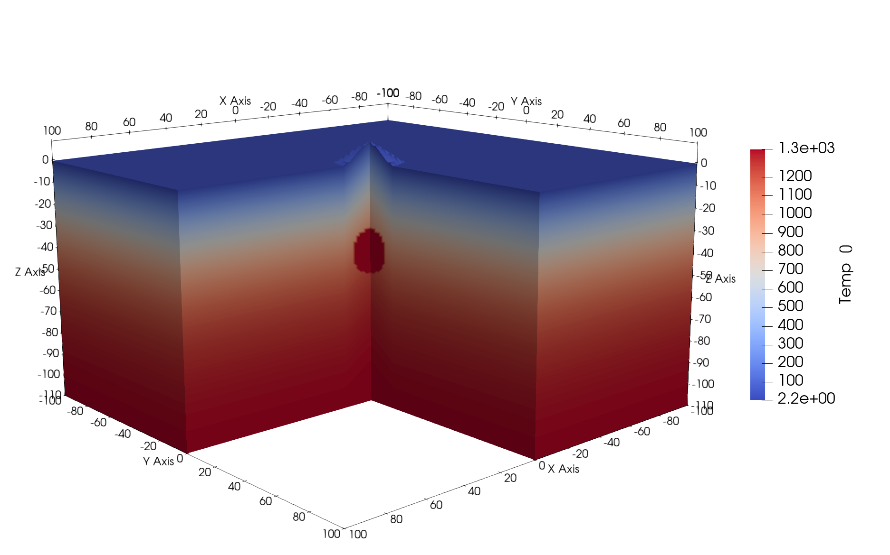

Simple model of a magmatic chamber with a volcano on top
Aim
The aim of this tutorial is to show you how to create 3D numerical model setups that can be used as initial setups for other codes.
Generating the model
Lets start with creating a 3D model setup in Cartesian coordinates, which uses the CartData data structure, with a resolution of $ 128 \times 128 \times 128 $ grid points, inside the domain $\Omega \in [-100,100] \times [-100,100] \times [-110,50]$ km
using GeophysicalModelGenerator
nx,ny,nz = 128, 128, 128
x = range(-100, 100, nx);
y = range(-100, 100, ny);
z = range(-110, 50, nz);
Grid = CartData(xyz_grid(x,y,z));Now we create an integer array that will hold the Phases information (which usually refers to the material or rock type in the simulation)
Phases = fill(0, nx, ny, nz);And as in the previous tutorials we initialize the temperature field:
Temp = fill(1350.0, nx,ny,nz);For simplicity, we will assume a model with thee horizontal layers with different rheology where later we add the volcano and the magmatic chamber. We use add_box! to generate the initial horizontally layered model:
lith = LithosphericPhases(Layers=[15 45 100], Phases=[1 2 3])
add_box!(Phases, Temp, Grid;
xlim=(-100, 100),
ylim=(-400, 400.0),
zlim=(-110.0, 0.0),
phase = lith,
T = HalfspaceCoolingTemp(Age=20)
)Then we can add the volcanic shape using add_volcano! function. In this case the base of the volcano will be centered at $x_i = (0,0,0)$, with a height of 10 km and a 15 km radius:
add_volcano!(Phases, Temp, Grid;
volcanic_phase = 1,
center = (0, 0, 0),
height = 10,
radius = 15,
base = 0.0,
background = nothing,
T = HalfspaceCoolingTemp(Age=20)
)We can also add a magmatic chamber located below the volcano
add_ellipsoid!(Phases, Temp, Grid;
cen = (0, 0, -40),
axes = (10, 10, 10),
phase = ConstantPhase(4),
)where we prescribe a constant temperature of $T=1400^{\circ}C$
@. Temp[Phases == 4] = 1400
Grid = addfield(Grid, (;Phases, Temp))Finally we setup the temperature of the air to $T^{\text{air}}=0^{\circ}C$
@. Temp[Phases == 0] = 0 write_paraview(Grid,"VolcanoModel3D");And the resulting image looks like 